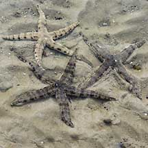
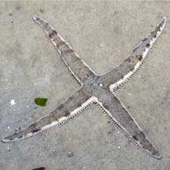
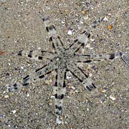
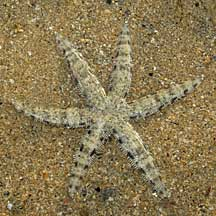
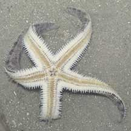
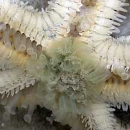
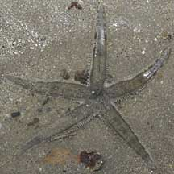
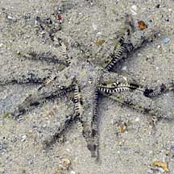

|
|
| sea stars text index | photo index |
| Phylum Echinodermata > Class Stelleroida > Subclass Asteroidea |
| Common
sea star Archaster typicus Family Archasteridae updated Mar 2020
Where seen? Despite its name, this elegant sea star is no longer common on all our shores. In the North, Chek Jawa used to be the only place where it was seen in large numbers. But following massive flooding in Johor in early 2007, there were mass deaths among these animals (more about the mass deaths on the Chek Jawa project blog). It is not no longer found on Changi or the East Coast. But it remains the most commonly encountered sea star on Southern shores. Generally in shallow sandy or silty areas near seagrasses and mangroves. Features: Adults diameter with arms to about 12-15cm. Smaller juveniles are rarely seen. Body somewhat rounded (not flat). Arms long and tapered to a sharp tip, and edged with short flat, blunt spines. Most have five arms, but those with three, four and six arms are sometimes also seen.The underside is pale, with large tube feet tipped with suckers. Colours and patterns on the upperside are highly variable in shades of greyish blue, to brown and beige. |
 Various colours and patterns, sometimes four or six arms Chek Jawa, Dec 03 |
 The white structure is the madreporite. |
 A distintegrating sea star due to massive floods. Chek Jawa, Jan 07 |
 A four-armed specimen Chek Jawa, Nov 06 |
 Wiith seven arms. Cryene Reef, Jul 10 |
 With six arms. Kusu Island, Feb 07 |
| Sometimes confused with the Eight-armed
sand star. The Eight-armed sand star
has, well, eight arms and large tube feet with pointed tips. While
most Common sea stars have five arms (although some may have six),
and all have large tube feet with sucker-shaped tips. What does it eat? According to Schoppe, it feeds on detritus, decaying plants and tiny animals. To eat, a common sea star sticks out its greenish 'stomach' through its mouth on the underside. The 'stomach' spreads out to mop up any edible titbits on the sand surface. |
 Arms can become flexible to turn themselves over if accidentally flipped. Chek Jawa, Mar 05 |
 The greenish stomach sticks out through the mouth to 'mop up' edible bits on the ground. Chek Jawa, Feb 02 |
 Small male on top of larger female. Kusu Island, Sep 10 |
| Uncommon mating ritual: Sea stars
of the genus Archaster have a unique mating behaviour. The
male, which is usually smaller, seeks out a female during the breeding
season. He then moves on top of her, his arms alternating with hers.
Their reproductive organs do not actually meet. Sperm is merely released
by the male when the female releases her eggs, for external fertilisation. This behaviour is believed to increase the chances of external fertilisation. So much so that the males do not need to be large and are thus usually smaller than the females, a rare gender difference among echinoderms. The only other sea star known to practice this kind of mating behaviour is the closely related Archaster angulatus. Juveniles are found in prop roots of mangroves and gradually inhabits sandy shores, seagrass areas and shoals as they age, where they are burried slightly in the sand. |
 Regenerating new arms. Tanah Merah, Oct 09 |


| Living on a star: A tiny parastic
snail (Parvioris fulvescens) is said to be sometimes found
on the underside of the common sea star. Here's some of the parasitic Ulimid
snails (Family Eulimidae) seen on our Common sea stars. Is our sea star special? According to the Singapore Red Data Book, the form found in Singapore is larger than other examples elsewhere in the west Pacific and may be a distinct variety of subspecies. Status and threats: Although plentiful in the past, common sea stars are now listed as 'Vulnerable' on the Red List of threatened animals in Singapore due to habitat loss and overcollection. Their mating behaviour suggests that a certain population density is required for them to be able to reproduce successfully. In the past in Singapore, the common sea star was often collected as a teaching aid in zoology and biology. This practice can threaten the population if it results in overcollection. |
 Mosaic crab attempting to eat ione? Beting Bemban Besar, Oct 25 Photo shared by Kelvin Yong on facebook |

|
| Common sea stars on Singapore shores |
On wildsingapore
flickr
|
| Other sightings on Singapore shores |
 Pulau Sudong, Dec 09 |
 Terumbu Berkas, Jan 10 |
| Filmed on Cyrene
Reef, 2008, with a glimpse of how the sea star moves with its tube feet! moving star @ cyrene from SgBeachBum on Vimeo. |
| Filmed on Cyrene
Reef, Jul 08, showing the sea star 'breathing' through the madreporite, and a tiny parasitic snail on it. sand star @ wonderful cyrene from SgBeachBum on Vimeo. |
| Filmed on St
John's Island
Shared by Sean Yap |
Links
|